|
|
| soft corals text index | photo index |
| Phylum Cnidaria > Class Anthozoa > Subclass Alcyonaria/Octocorallia > Order Alcyonacea > Family Alcyoniidae |
| Pinwheel
leathery soft coral Lobophytum sp.* Family Alcyoniidae updated Nov 2019 Where seen? This large disc-shaped leathery coral that resembles a pinwheel is commonly seen on our Southern shores. On coral rubble. Features: Colony 30-50cm or larger. The circular colony usually with a flat, broad disk attached to a hard surface by a very short, very broad central base that is usually the same diameter as the upper disk. The base is often hidden by the disk. On the upper surface, ridges radiate from the centre of the disk. The ridges may have large flaps so that the ridge looks like half of a lobed leaf. These ridges stick out of the disk and are not folds of the disk itself. When out of water, the ridges or 'leafy' parts are collapsed so that the entire colony sometimes looks like a pinwheel. The leathery common tissue may be pink, orange, greenish, maroon or brown. The colony has both autozooids and siphonozooids. Autozooid polyps have short bodies (about 1cm) which are usually of the same colour as the common tissue. The autozooid polyps have 8 branched tentacles that are white. The siphonozooids do not emerge from the body membrane and function to pump water through the colony. These look like little dots among the taller autozooid polyps. The autozooids can retract completely into the common tissue. Out of water, the surface of the common tissue has two different kinds of holes; bigger one where the retracted autozooids are, and smaller ones where the siphonozooids are. |
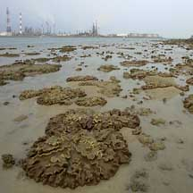 Pulau Hantu, Mar 05 |
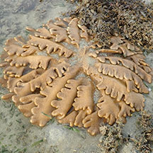 Often resembles a pinwheel. Terumbu Pempang Laut, Dec 18 |
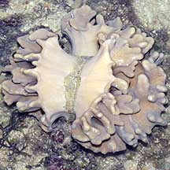 Upper disk and base diameter usually about the same diameter. Sisters Island, Jul 04 |
|
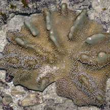 Sentosa, Aug 05 |
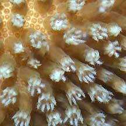 Sentosa, Aug 05 |
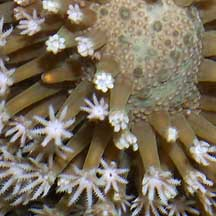 Sentosa, Aug 05 |
*Species are difficult to positively identify without close examination.
On this website, they are grouped by external features for convenience of display.
| Pinwheel leathery soft corals on Singapore shores |
On wildsingapore
flickr
|
| Other sightings on Singapore shores |
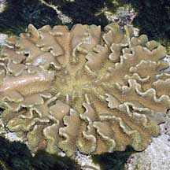 Pulau Biola, Dec 09 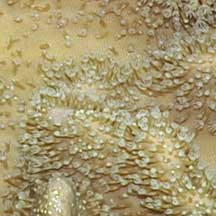 |
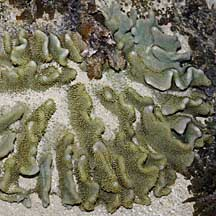 Pulau Pawai, Dec 09 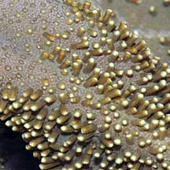 |
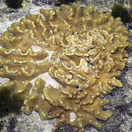 Terumbu Salu, Jan 10 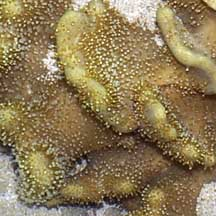 |
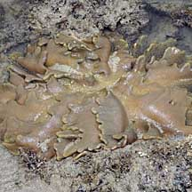 Terumbu Berkas, Jan 10 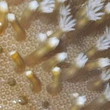 |
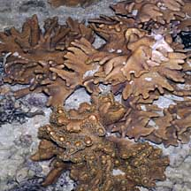 Pulau Salu, Aug 10 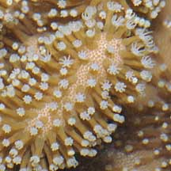 |
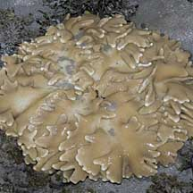 Pulau Berkas, May 10 |
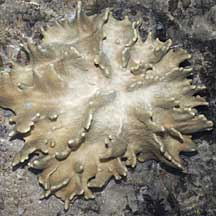 Pulau Salu, Jun 10 |
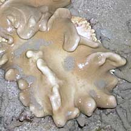 Bleaching. Pulau Berkas, May 10 |
|
Links
References
|